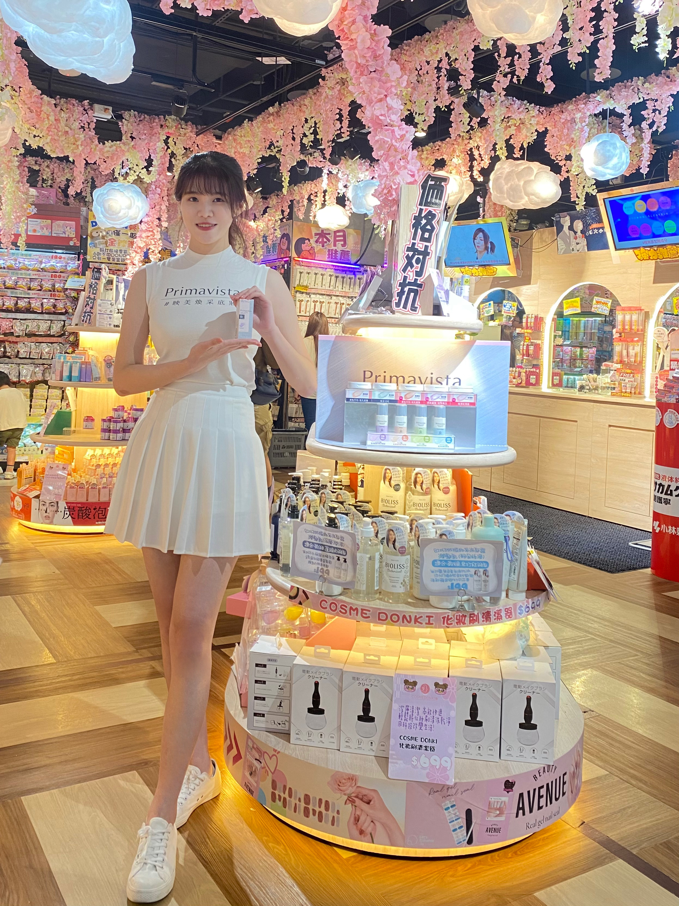
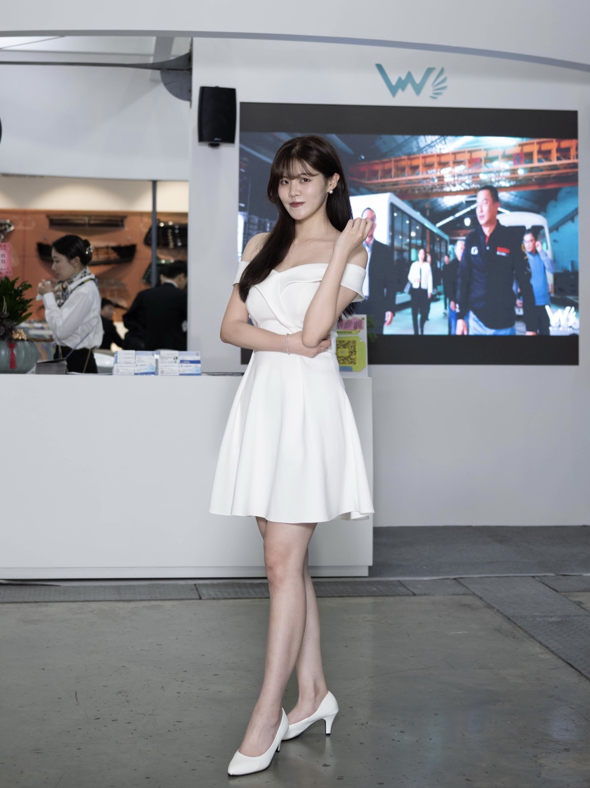

01 / 03
學歷：台大國家發展研究所、成大政治學系。
具備北京、上海、山西、陝西等地實習工作經驗，能快速適應陌生環境與文化差異。於資訊不完整、資源有限的情況下，仍能主動拆解問題、推進專案並產出具體成果。
研究所就學期間同步累積三年品牌公關與一線活動接案經驗，長期於高壓步調中培養時間管理與臨場應變能力。
習慣以邏輯與數據支持判斷，並將 AI 工具應用於資料整理、報告撰寫與工作流程優化，具備清晰的使用者視角與精準表達能力。

北京證券交易所（中國．北京）
比較中台上市櫃制度差異，將龐雜法規系統化整理為內部參考文件，支援團隊決策討論，展現強大的資料彙整與分析能力。

皇冠集團（中國．上海）
於抖音、小紅書、天貓、淘寶等平台執行直播帶貨，即時觀察觀眾互動反應並調整節奏與話術。零初始流量、高壓即時應變條件下，透過使用者反饋快速迭代，單場最高達成 300 人觀看。
山西省外經貿發展中心 (中國．山西太原)
陝西歷史博物館 (中國．陝西西安)
大昌行 (中國．上海)
綠能 NGO (台北)
自由接案 (研究所期間至今)


